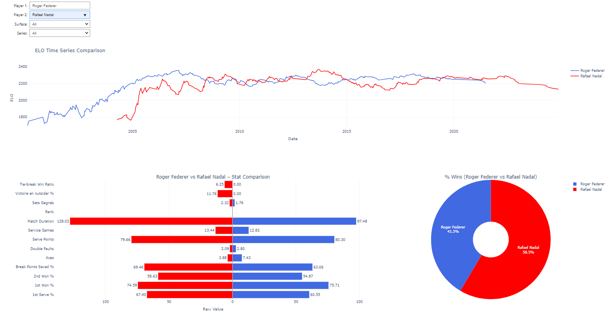

Men’s Tennis (2000–2024): Two Decades of Data and Rivalries
Welcome to our interactive platform dedicated to exploring men’s professional tennis from 2000 to 2024. Built on comprehensive datasets from ATP matches and betting markets, this project allows you to visualize, compare, and analyze the performances of the greatest players of the modern era.
Evolution of ELO Ranking
Stats of fighters

Project Goals
Our mission is to make tennis statistics more accessible and insightful for both casual fans and tennis enthusiasts. With clean, interactive visualizations, you can explore:
- ELO rating evolution of players over time
- Performance across surfaces (Hard, Clay, Grass)
- Detailed head-to-head statistical comparisons
- Historical duel outcomes with interactive pie charts
- Bookmaker prediction accuracy
Key Insights
- The rise of the Big 3: Federer, Nadal, and Djokovic and their dominance in major tournaments
- Surface specialists: some thrive on clay, others dominate on grass
- Legendary matchups: explore iconic rivalries and victory breakdowns
- Next-gen talents: follow the trajectory of rising stars in the 2020s
Data Sources
- ATP Matches (2000–2024): Historical tournament results and player stats
- Dynamic ELO Ratings: Performance-based scores calculated after each match
- Detailed player stats: Aces, double faults, break points, service games, tie-breaks, and more
- Betting market odds: Implied win probabilities from multiple bookmakers
What You Can Do
- Compare two players based on form and performance metrics
- Visualize stats by surface or tournament stage
- Explore head-to-head results with pie charts
- Track ELO rankings and consistency across seasons
Technologies Used
- Python, Pandas, Plotly, ipywidgets
- Dynamic visualizations via Jupyter, or web-ready via Dash/Streamlit
Timeline Coverage
- From January 1st, 2000 to December 31st, 2024
- Over 100,000 matches analyzed
- Continuously updated with the latest ATP results
“Data doesn’t replace the game… but it tells the story better.”
– Tennis Data Explorer Team